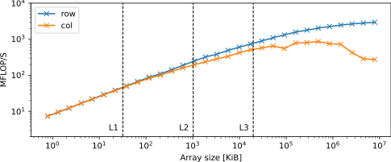
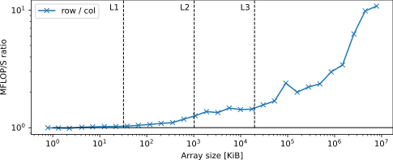
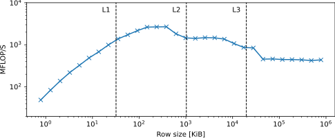
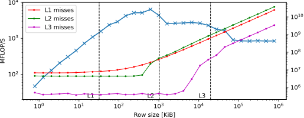
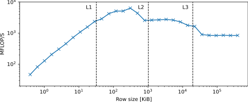

The goal of this exercise is to visualize how the caches affects performance. The exercise will expand on the example from section 6.1.1. in Fast Python. Consider the following code:
import numpy as np
SIZE = 100
mat = np.random.rand(SIZE, SIZE)
double_column = 2 * mat[:, 0]
double_row = 2 * mat[0, :]
which is a slightly modified version of the code from the book - using rand instead of randint and floating point numbers instead of integers.
Make a Python program that measures the execution time of 2 * mat[:, 0] and 2 * mat[0, :]. Measure the time for at least 1000 repetitions. Hint: remember what you did in Week 2, Exercise 2.5.
Answer:
from time import perf_counter as time
import numpy as np
SIZE = 100
n_repeat = int(1e3)
mat = np.random.rand(SIZE, SIZE)
trow = time()
for _ in range(n_repeat):
mat[0, :] * 1.01
trow = time() - trow
tcol = time()
for _ in range(n_repeat):
mat[:, 0] * 1.01
tcol = time() - tcol
print('trow =', trow / n_repeat)
print('tcol =', tcol / n_repeat)
Autolab Make a job script that runs your program. Submit it to the hpc queue, use a node with an Intel Xeon Gold 6126, Intel Xeon Gold 6142 or Intel Xeon Gold 6226R processor, and request a single core. Hint: remember the exercises from week 1.
Answer: Autolab exercise - answer omitted
Modify your Python program and/or your jobscript to measure the time for SIZE ranging from to . Do the measurement from a batch job - this is important, so you have control over the hardware!
Hint: Use np.logspace to get logarithmitcally spaces numbers for SIZE.
Answer:
from time import perf_counter as time
import numpy as np
# Rows vs. Columns
# ns = [100, 1000, 10000] # <-- From the book
ns = np.round(np.logspace(1, 4.5, 30))
trows = []
tcols = []
n_repeat = int(1e3)
for n in ns:
n = int(n)
mat = np.random.rand(n, n)
trow = time()
for _ in range(n_repeat):
mat[0, :] * 1.01
trow = time() - trow
tcol = time()
for _ in range(n_repeat):
mat[:, 0] * 1.01
tcol = time() - tcol
trows.append(trow / n_repeat)
tcols.append(tcol / n_repeat)
print(mat.dtype)
print('ns =', list(ns))
print('trows =', trows)
print('tcols =', tcols)
Make a loglog plot of the performance of the row and column doubling as MFLOP/s over the size of the matrix in kilobytes. Do they perform the same? How does their performance align with the sizes of the CPU caches? Hint: you can read the cache sizes from the lscpu output.
Answer: I used an Intel Xeon Gold 6126 processor. The output of lscpu should be:
Architecture: x86_64
CPU op-mode(s): 32-bit, 64-bit
Byte Order: Little Endian
CPU(s): 24
On-line CPU(s) list: 0-23
Thread(s) per core: 1
Core(s) per socket: 12
Socket(s): 2
NUMA node(s): 2
Vendor ID: GenuineIntel
CPU family: 6
Model: 85
Model name: Intel(R) Xeon(R) Gold 6126 CPU @ 2.60GHz
Stepping: 4
CPU MHz: 999.960
BogoMIPS: 5200.00
Virtualization: VT-x
L1d cache: 32K
L1i cache: 32K
L2 cache: 1024K
L3 cache: 19712K
NUMA node0 CPU(s): 0-11
NUMA node1 CPU(s): 12-23
Flags: fpu vme de pse tsc msr <rest omitted...>
The size of the L1 data cache is under L1d cache: and is 32 kilobytes (KB). The L2 is under L2 cache: and is 1024 kilobytes (KB) or 1 megabyte (MB). Finally, the L3 cache is under L3 cache: and is 19712 kilobytes (KB) or 19.25 megabytes (MB).
The performance plot is:

When the array is small enough to fit in the L1 cache, both scaling methods perform similarly. As the array grows to fit only in the L2 cache, their performance diverges. The reason is that column scaling now incurs cache misses because it accesses almost the entire array, whereas row scaling remains efficient because the row still fits in the L1 cache. As the array size increases, column scaling suffers more from cache misses, including costlier L2 and L3 misses, which makes the performance gap even wider.
Answer: The ratio of the performances is:

Let us focus on the row scaling. Modify the code so mat is a row vector, i.e., mat = np.random.rand(1, SIZE). Measure the time for SIZE ranging from to using at least 100 repetitions. Again, do the measurement from a batch job.
Hint: Again, use np.logspace to generate values for SIZE.
Answer:
from time import perf_counter as time
import numpy as np
# Only row
ns = np.ceil(np.logspace(2, 8, 30))
trows = []
n_repeat = int(1e2)
for n in ns:
n = int(n)
mat = np.random.rand(1, n)
trow = time()
for _ in range(n_repeat):
mat[0, :] * 2
trow = time() - trow
trows.append(trow / n_repeat)
print('ns =', list(ns))
print('trows =', trows)
Autolab Make a loglog plot of the performance of the row doubling as MFLOP/s over the size of the row vector in kilobytes. What do you see? Do the performance changes align with the cache sizes?
Answer: The performance plot is:

The increase in performance while the row still fits in the L1 is likely due to the Python's overhead dominating the time measurements. This is the price we pay for using Python. Otherwise, we do observe that performance decreases in stair step fashion around cache boundaries, as expected.
Optional details: We can verify that what we're seeing is indeed due to cache effects by measuring cache misses with perf. In the plot below, we overlay the number of cache misses as a function of the array size:

The uptick in cache misses corresponds well with the dips in performance. Note, the use of perf is not part of 02613 and you are not expected to do this! If you find this interesting, see 02614 High Performance Computing.
(Optional:) Redo the experiment using mat = mat.astype('float32'). Do you observe the same pattern?
Answer: The performance plot is:

The pattern is more or less the same, which is expected.
The goal of this exercise is to analyze when the time required to read the compressed data and to uncompress it is smaller than the time to read the raw data. The exercise is based on the example from section 6.2.1 in Fast Python. We are going to use Blosc to perform efficient compression and decrompression algorithms. Use the following supporting functions:
import os
import blosc
import numpy as np
def write_numpy(arr, file_name):
np.save(f"{file_name}.npy", arr)
os.sync()
def write_blosc(arr, file_name, cname="lz4"):
b_arr = blosc.pack_array(arr, cname=cname)
with open(f"{file_name}.bl", "wb") as w:
w.write(b_arr)
os.sync()
def read_numpy(file_name):
return np.load(f"{file_name}.npy")
def read_blosc(file_name):
with open(f"{file_name}.bl", "rb") as r:
b_arr = r.read()
return blosc.unpack_array(b_arr)
We add os.sync() to force the disk to flush, cleaning the operating system IO buffers as much as possible to ensure a fair comparison between the methods (see Section 6.2 in Fast Python).
Autolab Write a Python program that takes a number as a command line argument. It must then generate a 3 dimensional NumPy array of zeros with size and dtype='uint8'. The program must then measure and print the time it takes to perform each of the following operations:
Save the array to a file using the provided write_numpy.
Save the array to a file using the provided write_blosc.
Read the array from the created file using the provided read_numpy.
Read the array from the created file using the provided read_blosc.
Note, you must print the time for each operation seperately, i.e., four time values should be printed. You may print them on a single line seperated by a space or on 4 separate lines.
Answer: Autolab exercise - answer omitted
Autolab Make a job script that runs your program with = 256, 512 and 1024 and submit it to the hpc queue. Request 1 core and remember to request enough memory to keep the arrays in memory.
Answer: Autolab exercise - answer omitted
Do the same, but now, instead of zero entries, the array will have tiled values of integers up to 256. Hint: You may use the following snippet to generate the array:
tiled_array = np.tile(
np.arange(256, dtype='uint8'),
(n // 256) * n * n,
).reshape(n, n, n)
Answer: See hint.
Do it one last time, but now using random integer entries from 0 to 256. Hint: Use the np.random.randint function.
Answer: Generate the array with
rand_array = np.random.randint(
0, 256, size=(n,) * 3, dtype='uint8'
)
Autolab Compare the time it takes to write and read the files in the three items above for the different n. When should we use blosc? Why? Compare also the sizes the generated files.
Answer: Autolab exercise - answer omitted
In the blosc implementation, change the compression algorithm from cname="lz4" to cname="zstd". What improvements do you observe? What was the cost of these improvements?
Answer: Autolab exercise - answer omitted